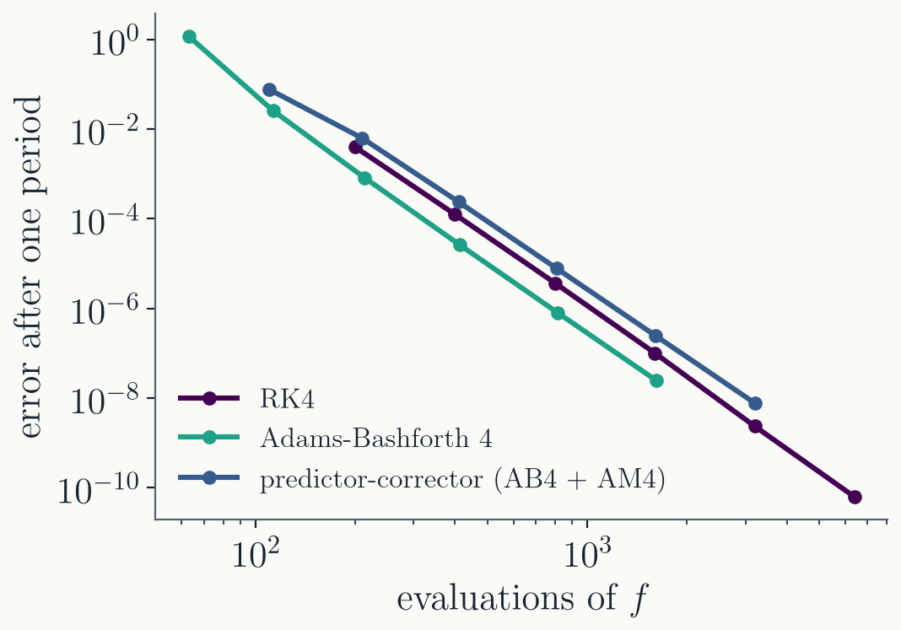
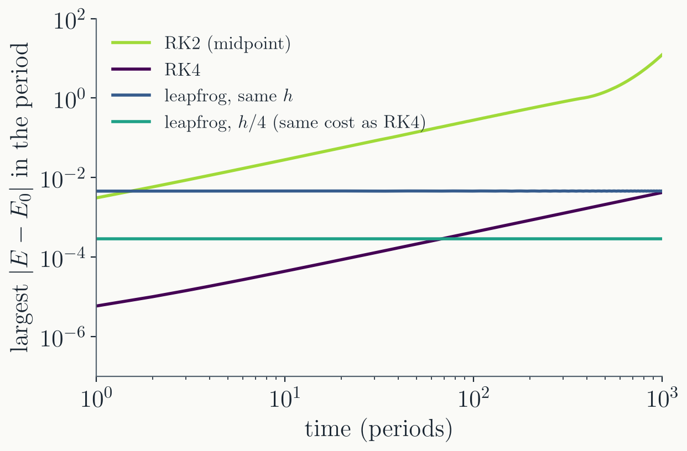
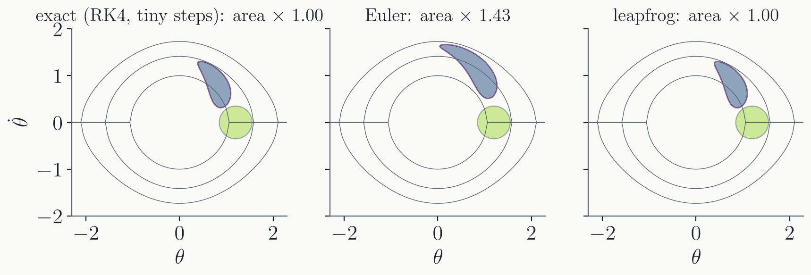

Correct: AM4 with
$\tilde f_{n+1}$ in place of $f_{n+1}$.
Evaluate $f_{n+1}$ at the
corrected $y_{n+1}$, for use in later steps.
"PECE": two evaluations per step.
$|y_{n+1} - \tilde y_{n+1}|$ estimates the
local error for free, like the embedded pair in Dormand-Prince
(Lecture 8).
Cost, measured

The $170°$ pendulum over one period, fixed $h$. At about
400 evaluations of $f$:
RK4
$1.2 \times 10^{-4}$
AB4
$2.6 \times 10^{-5}$
AB4 + AM4
$2.4 \times 10^{-4}$
All three are fourth order. Per
evaluation, AB4 wins by a factor of about 4 here.
The corrector costs a second evaluation
per step; what it buys is the error estimate and better
stability, not accuracy per evaluation.
The catch
Start-up. AB4 needs three
earlier slopes that do not exist at $t_0$. The first steps are
taken with a one-step method, such as RK4.
Fixed step. The weights
assume equally spaced slopes. Changing $h$ means
re-interpolating the history, so step control is harder than
in Dormand-Prince.
Stability shrinks with
order. Largest stable $|h\lambda|$ on the negative
real axis:
AB1
AB2
AB3
AB4
RK4
$2$
$1$
$0.55$
$0.30$
$2.79$
Even per evaluation, RK4 ($2.79/4 = 0.70$) is more stable than
AB4.
Backward differentiation formulas
For stiff problems, turn the idea
around: interpolate the stored values $y_{n+1}, y_n,
y_{n-1}, \dots$, and require the polynomial's slope at $t_{n+1}$
to equal $f_{n+1}$.
Implicit and stable far into the left half
plane: the standard stiff solvers (scipy's
solve_ivp(method="BDF"), CVODE) use BDF of
orders 1 to 5, changing order and step as they go.
Part II · Energy conservation
Long runs
Small errors, many periods
Homework 4: Euler pushed the pendulum over the top within one
swing, while RK4 lost only $2.5 \times 10^{-11}$ of energy in two
periods.
Many simulations run for far longer than
two periods: planetary orbits over billions of revolutions,
molecular dynamics over millions of steps.
A tiny energy error per period, repeated a
million times, is no longer tiny.
The question is not only how large the
error is after one period, but whether it keeps growing.
1000 periods of a pendulum

$\theta_0 = 90°$, $h = T/50$.
RK2 gains energy until
the pendulum spins over the top.
RK4 loses about
$4 \times 10^{-6}$ per period, steadily: $4 \times 10^{-3}$
after 1000.
Leapfrog (next
slides) has a larger error at first, which never
grows.
At the same cost as RK4, leapfrog is
better after about 70 periods, and the gap widens
forever.
From midpoint to leapfrog
The midpoint method (Lecture 6) computes
a value at the half step, uses it once, and throws it away. Keep
it instead, and let positions and velocities alternate:
$a(x_{n+1})$ is reused in the first half kick
of the next step: still one evaluation per step.
This is the workhorse of molecular
dynamics, where it is called velocity Verlet.
Leapfrog runs backwards exactly
Every substep is undone by the same substep with $-h$:
$x_{n+1} = x_n + h\,v$ is reversed by $x_n = x_{n+1} - h\,v$,
with the same $v$.
So reversing the velocity and running the
same number of steps retraces the trajectory, as the exact
dynamics does.
Measured at $\theta_0 = 90°$, $h = 0.1$: run
1000 steps, flip $v$, run 1000 more.
distance from the start
RK4
$2.1 \times 10^{-4}$
leapfrog
$6.3 \times 10^{-14}$
Leapfrog's only error on the way back is
rounding.
Phase-space area

Hamiltonian dynamics preserves the area of
any patch of initial conditions (Liouville's theorem), however
much it stretches the patch.
Leapfrog preserves it exactly; Euler does
not. Methods that preserve it are called
symplectic.
One step as a matrix
On the harmonic oscillator
$\ddot x = -x$, every method here multiplies $(x, v)$ by a
matrix. Its determinant is the area factor per step:
Euler
RK2
RK4
leapfrog
area factor
$1 + h^2$
$1 + h^4/4$
$1 - h^6/72 + \dots$
$1$
energy
grows
grows
decays
bounded
A kick changes only $v$, by an amount that
depends only on $x$; a drift changes only $x$. Both are shears,
with determinant exactly 1.
The Runge-Kutta factors are
$|R(ih)|^2$, with $R$ the amplification factor of Lecture 7:
close to 1, never equal to it.
Why the error stays bounded
On $\ddot x = -x$, leapfrog conserves
a slightly different energy exactly:
$$\tilde E = \tfrac12 v^2 + \tfrac12\left(1 - \tfrac{h^2}{4}\right) x^2$$
Measured at $h = 0.5$, 1000 steps: $E$
varies by $3 \times 10^{-2}$, $\tilde E$ by
$3 \times 10^{-15}$.
The numerical trajectory lies exactly on a
level curve of $\tilde E$, which stays within $O(h^2)$ of the
true one: the error in $E$ oscillates but cannot grow.
For a general Hamiltonian, a symplectic
method conserves a nearby "shadow" Hamiltonian
$\tilde H = H + O(h^p)$ for exponentially long times.
The fine print
Fixed step. Changing $h$
from step to step (adaptive control) changes the shadow
Hamiltonian as you go, and the bounded error is lost.
Hamiltonian systems only.
With friction or a driving force there is no energy to
conserve, and the advantage is gone.
Second order. Higher orders
come from composing leapfrog steps: three substeps of sizes
$w_1 h$, $w_0 h$, $w_1 h$ with
$w_1 = 1/(2 - 2^{1/3}) \approx 1.35$ and
$w_0 = 1 - 2 w_1 \approx -1.70$ give a fourth-order symplectic
method (Yoshida 1990).
Not more accurate. Over a
few periods RK4 wins, as the figure showed. Symplectic methods
win over long runs.
Which method, when
the problem
a good default
general, non-stiff, accuracy
requested
adaptive Dormand-Prince
non-stiff, smooth, $f$ very
expensive
Adams (predictor-corrector)
stiff
implicit: BDF
Hamiltonian, very long run
symplectic, fixed step: leapfrog and its compositions
Symplectic
integrators run molecular dynamics codes, long-term planetary
simulations, and particle pushers in plasma codes.
Where this goes next
Homework 5 (adaptive
Dormand-Prince) is due Wednesday.